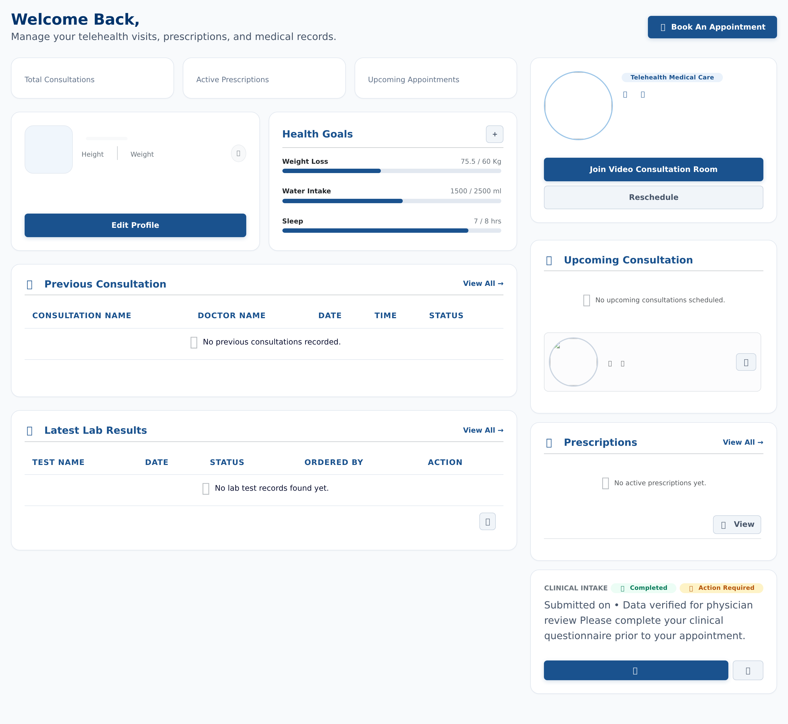
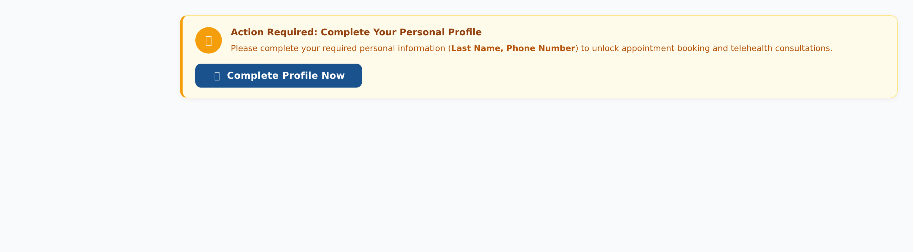
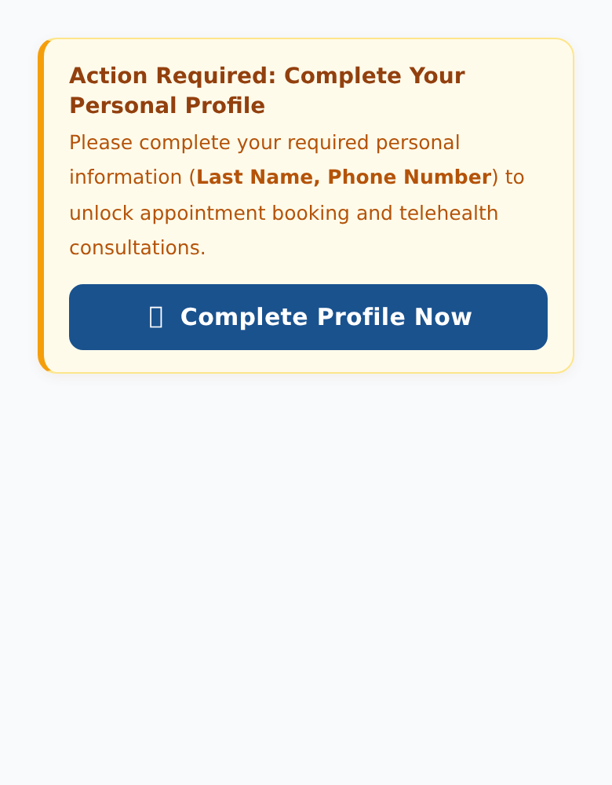
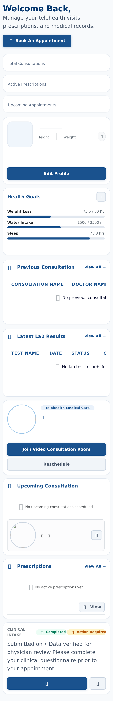

Home template ab doctor dashboard ke saath consistent hai. Browser audit se jo off-theme colours mile, sab palette par aa gaye — orange progress bars, Bootstrap blue heading, aur hardcoded slate text.
Sirf CSS padhne ke bajaye, page ko headless browser me render karke har element ka actual computed colour nikala, phir palette se compare kiya. Yeh mila:
| Element | Pehle | Ab |
|---|---|---|
| Health goal progress bars | orange #D97706 — teeno bars orange, jo site ke navy
se bilkul match nahi karta tha. |
navy #1A528E, track #E2E8F0, 8px height,
pill radius (pehle 6px). |
| “Health Goals” heading | BS blue .text-primary = #0d6efd —
Bootstrap ka default blue, theme ka nahi. |
navy #1A528E. |
| “Welcome Back” heading | slate Hardcoded #334155 — baaki headings se alag. |
navy #00346C. |
| Stat numbers (00 / 02 / 00) | BS blue #0d6efd |
navy #00346C — darker, better contrast. |
| “View All →” links | BS blue #0d6efd |
navy #1A528E, hover #00346C. |
| Status pills | raw BS Amber #ffc107 / green
#198754 — Bootstrap ke raw tokens. |
tuned Palette amber (#B45309 on
#FEF3C7) aur green (#047857 on #ECFDF5). |
| Profile-incomplete banner CTA | off-palette #2C6CB1 — not one of our tokens. |
navy #1A528E / hover #00346C. |
Design decision: warning banner amber hi rahega — wahan amber
kaam kar raha hai (real alert), brand colour nahi. Bas tonality palette ke amber par shift ki, taaki
raw Bootstrap #ffc107 na dikhe. Green (completed) aur red (danger) bhi semantic hain, wo
bhi unchanged intent ke saath tuned kiye.

#E2E8F0 border, halka shadow (doctor dashboard jaisa).Desktop

Mobile — icon hata, CTA full width

Mobile fix: 42px icon circle top-aligned tha jabki paragraph 4 line ka — isliye icon block ke beech me latak raha tha. Phone par icon hide karke text ko poori width de di, aur CTA full-width button ban gaya.

| Width | Overflow | Clipped labels | Progress colour | Small tap targets |
|---|---|---|---|---|
| 1440px | no | none | navy | 0 |
| 1024px | no | none | navy | 0 |
| 820px | no | none | navy | 0 |
| 390px | no | none | navy | 0 |
| 320px | no | none | navy | 0 |
Colour sweep: fix ke baad dobara audit chalaya — jo non-neutral colours bache wo sirf yeh hain: warning pill amber, success pill green, doctor photo ka light-blue ring, aur banner ka amber. Sab intentional aur semantic.
Regression: patient notification/profile dropdowns, doctor settings page, sidebar toggle aur popup theme suite — sab pass, zero console errors.
assets/css/dior-custom.css — end me naya block
PATIENT DASHBOARD → HOME / OVERVIEW — theme lock,
#tab-overview par scoped. Sirf CSS: koi PHP/JS change nahi, isliye health-goals modal,
appointment booking aur tab switching jaisa tha waisa hi hai.